Здесь собраны отчёты по практическим занятиям: работа с командной строкой Linux, решение CTF-заданий, Command Challenge, а также создание сайта с помощью Hugo и GitHub Pages.
1. GameShell — работа с командной строкой
Дата выполнения: 6 октября 2026 года
В GameShell мы выполняли игровые задания, используя команды Linux. Нужно было перемещаться между папками, создавать и удалять файлы, находить скрытые объекты и работать с шаблонами имён.
Использованные команды
gsh goal— узнать цель текущей миссии.gsh check— проверить выполнение миссии.gsh help— посмотреть список доступных команд.gsh reset— начать миссию заново.gsh exit— выйти из GameShell.cd LOCATION— перейти в указанное место.cd— вернуться в начальную локацию.cd ..— перейти на уровень вверх.pwd— показать текущий путь.ls— показать список файлов и папок.ls -A— показать все файлы, включая скрытые.mkdir DIRECTORY— создать каталог.rm FILE— удалить файл.mv FILE DIRECTORY— переместить файл.cp FILE DIRECTORY— скопировать файл.~— обозначение домашнего каталога.*— заменяет любую последовательность символов.?— заменяет один символ.Tab— автодополнение имени файла или каталога.
Mission 1. Навигация по папкам
Задача: подняться на вершину башни замка.
Команды: cd, ls.
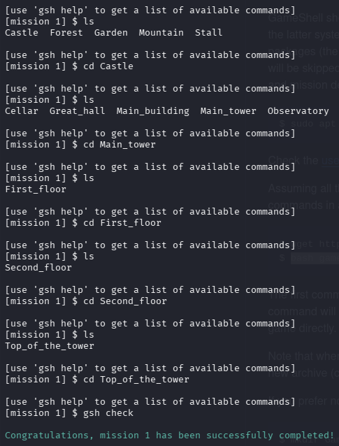
Mission 2. Возврат назад и проверка пути
Задача: вернуться на уровень вверх и проверить текущее местоположение.
Команды: cd, cd .., pwd, ls.
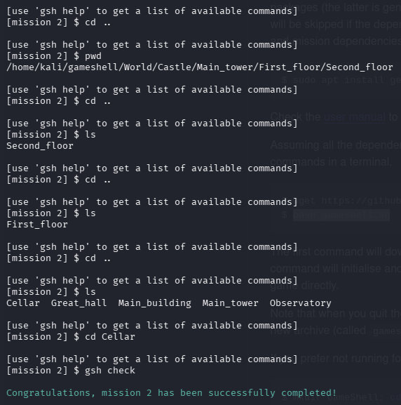
Mission 3. Быстрый переход в глубокую папку
Задача: перейти сразу в тронный зал, указав полный путь.
Команды: cd с полным путём.
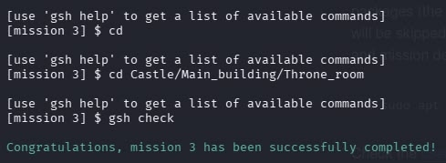
Mission 4. Создание папок
Задача: создать хижину в лесу и сундук внутри неё.
Команды: cd, mkdir.
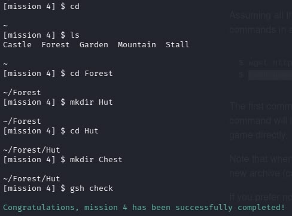
Mission 5. Удаление файлов
Задача: избавиться от пауков в подвале замка.
Команды: cd, ls, rm.
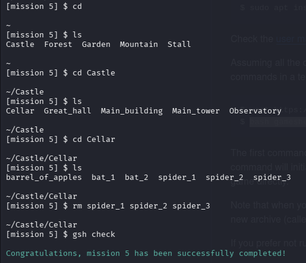
Mission 6. Перемещение файлов
Задача: переместить монеты из сада в сундук в хижине.
Команды: mv, ~.
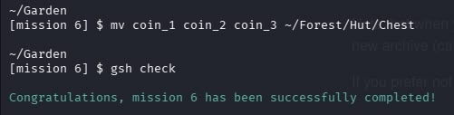
Mission 7. Работа со скрытыми файлами
Задача: найти скрытые монеты (имена файлов начинаются с точки) и переместить их в сундук.
Команды: ls -A, mv, ~.
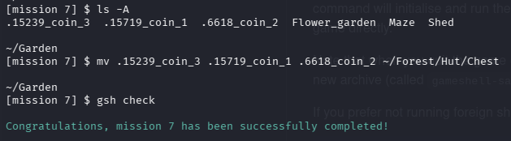
Mission 8. Удаление файлов по шаблону
Задача: удалить все файлы, содержащие слово spider в имени.
Команды: cd, ls -A, rm, *.
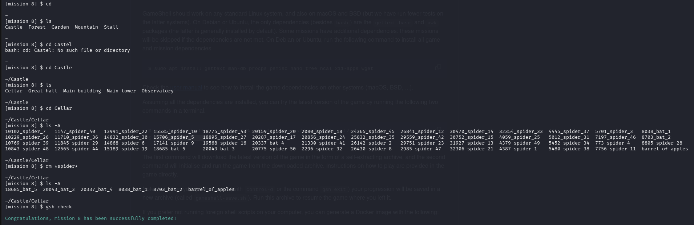
Mission 9. Удаление скрытых файлов по шаблону
Задача: удалить скрытые файлы с пауками, имена которых начинаются с точки.
Команды: ls -A, rm, .*.
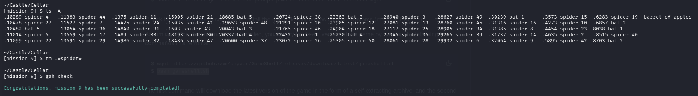
Mission 10. Копирование файлов по шаблону
Задача: скопировать стандартные доспехи из большого зала в сундук.
Команды: cd, ls -A, cp, *.
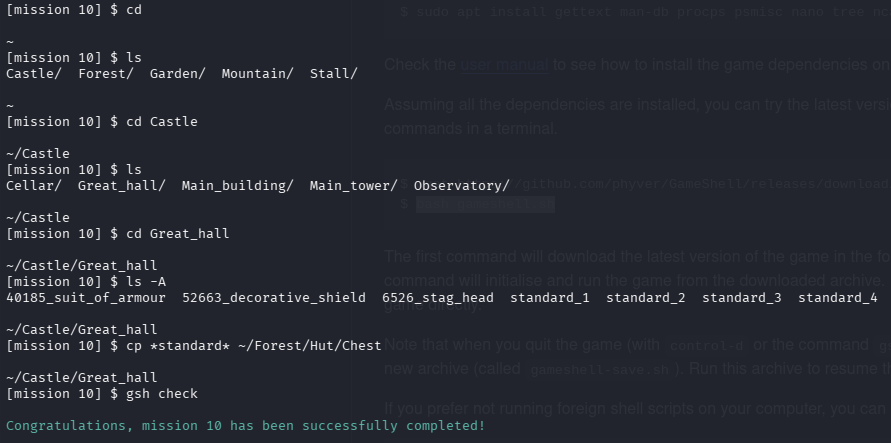
2. CTF — поиск и обработка информации
Дата выполнения: 13 октября 2026 года
На занятии мы проходили уровни CTF, в которых нужно было находить пароли и ключи, используя команды терминала и разные способы обработки файлов.
Уровень 0. Поиск пароля в файле
Задача: найти пароль для level1 в файле readme.txt, расположенном в домашней директории.
Команды: ls, cat.
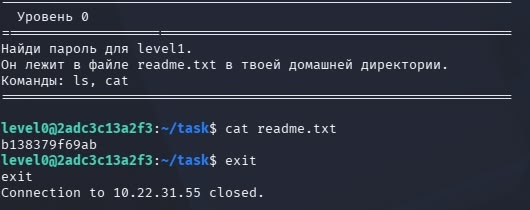
Уровень 1. Поиск пароля в скрытом файле
Задача: найти пароль в скрытом файле внутри папки inhere.
Команды: cd, ls -A, cat.
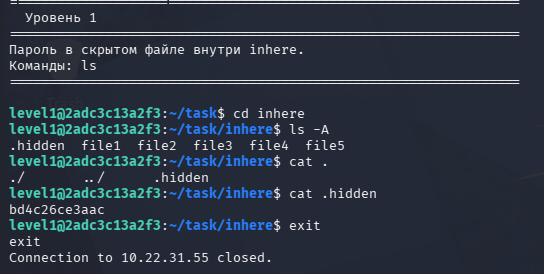
Уровень 2. Поиск строки в файле
Задача: найти строку со словом millionth в файле data.txt.
Команда: grep.
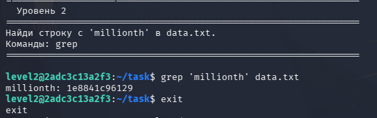
Уровень 3. Поиск файла с необычным именем
Задача: найти файл readme с необычным именем, начинающимся с дефиса и пробела, и прочитать его.
Команды: ls, cat.
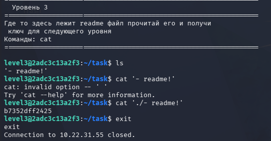
Уровень 4. Работа с архивом
Задача: найти ключ, спрятанный внутри архива archive.tar.gz в домашнем каталоге.
Команды: ls -la, tar, cd, cat.
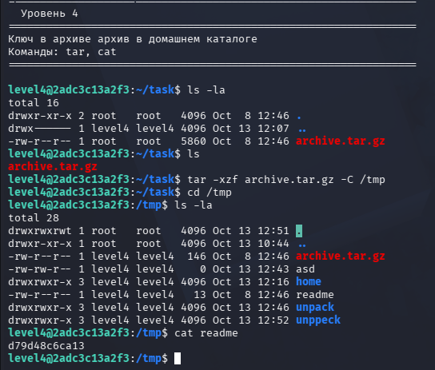
Уровень 5. Расшифровка ROT13
Задача: расшифровать содержимое файла data.txt, закодированного шифром ROT13, и получить пароль.
Команды: cat, tr.
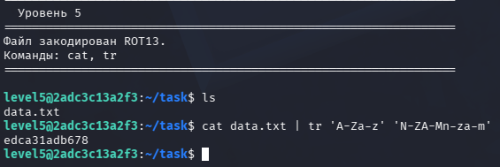
3. Command Challenge
Дата выполнения: 20 октября 2026 года
На занятии мы решали интерактивные задачи на сайте cmdchallenge.com. Каждое задание было обозначено иконкой животного или насекомого. Чтобы пройти уровень, нужно было написать правильную команду в терминале.
Задания отличались по сложности: от простого подсчёта суммы чисел в файле до обработки текста, фильтрации и сортировки данных.
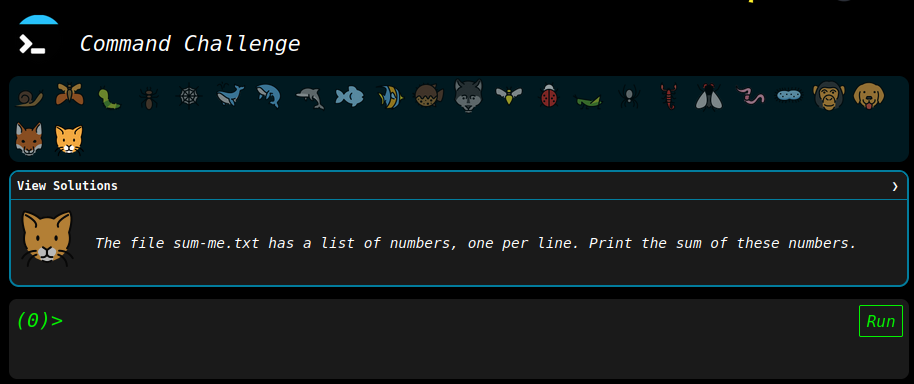
4. Работа с GitHub и создание сайта на Hugo
Дата выполнения: 27 октября 2026 года
На занятии мы изучали создание собственного сайта с помощью генератора статических сайтов Hugo. Для работы использовались GitHub и облачная среда разработки Codespaces.
Основные этапы создания сайта:
- Создание публичного репозитория
hugo-blogна GitHub. - Подключение к репозиторию через Codespaces и настройка Git.
- Установка Hugo и создание структуры проекта.
- Выбор темы оформления и создание первой страницы с текстовой записью.
- Сборка сайта с помощью команды
hugoи первоначальная публикация через GitHub Pages.
После создания базовой версии я продолжила работать над сайтом и постепенно изменять его оформление. Для этого настроила главную страницу и меню навигации, добавила отдельные разделы для практических работ и записей. Содержание страниц оформляется с помощью Markdown, а изображения хранятся в отдельной папке проекта.
Также я начала изменять внешний вид сайта: создала собственные шаблоны страниц и настроила CSS-стили. Изменила цветовую палитру, шрифты, отступы и оформление отдельных элементов, чтобы страницы выглядели более аккуратно и сочетались между собой.
Во время работы я использовала Git и GitHub для хранения проекта и управления изменениями. Перед публикацией проверяла результат локально с помощью встроенного сервера Hugo, что позволяло сразу видеть изменения и исправлять ошибки.